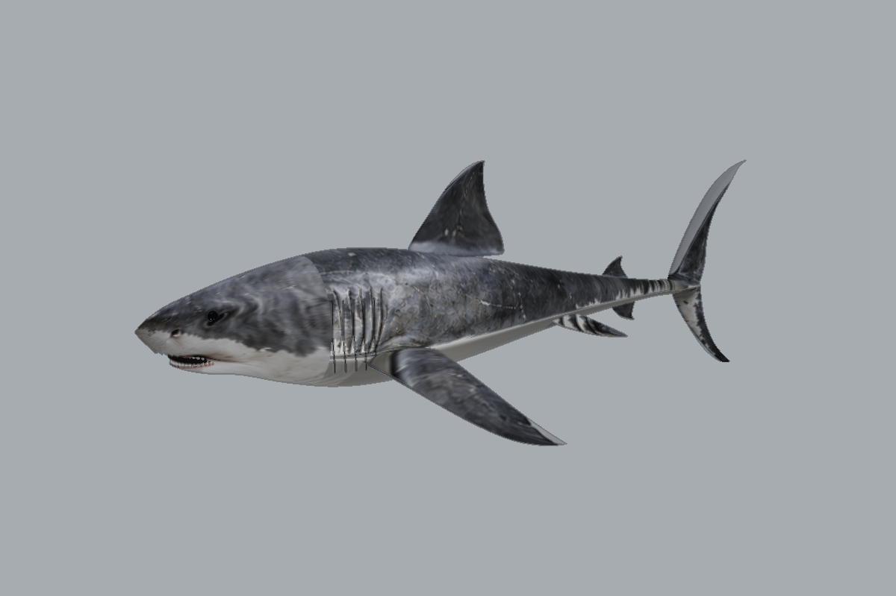
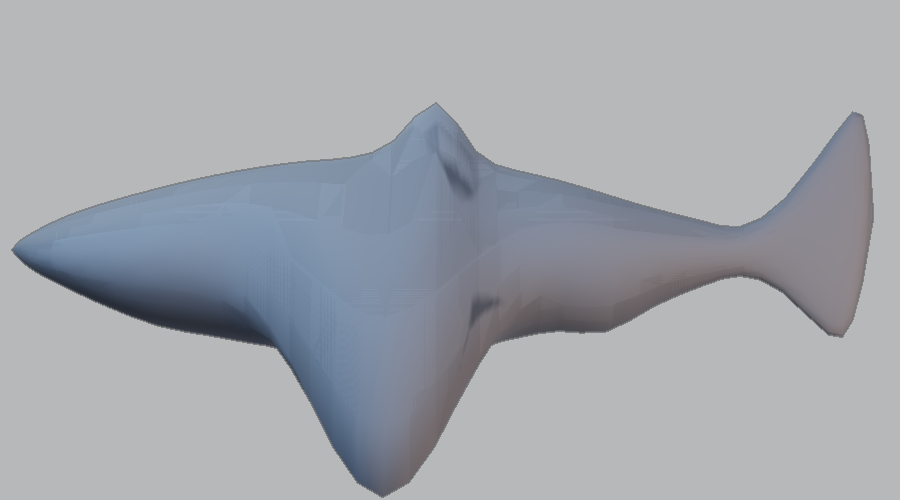
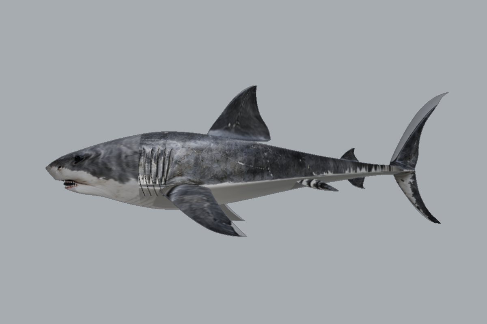
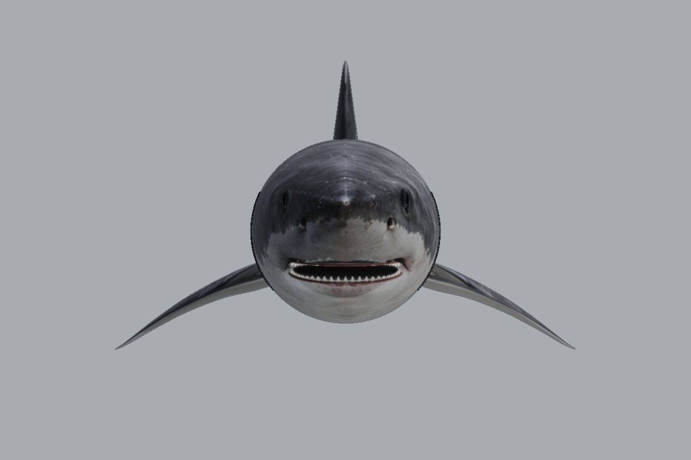
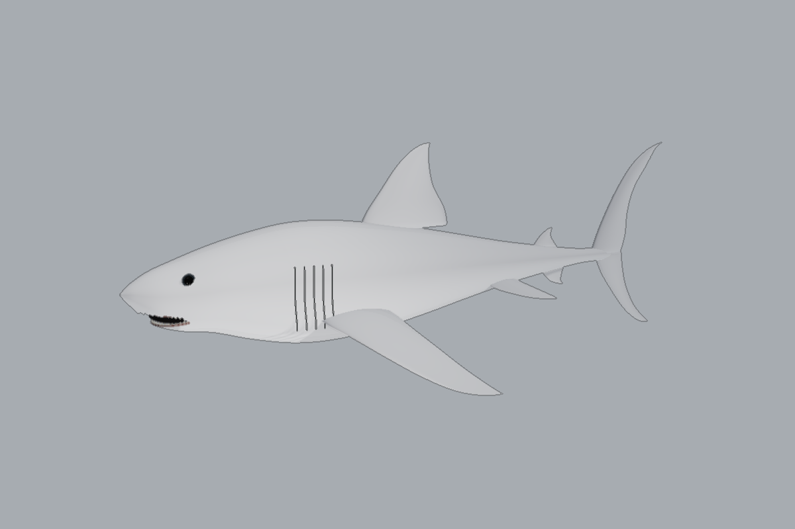
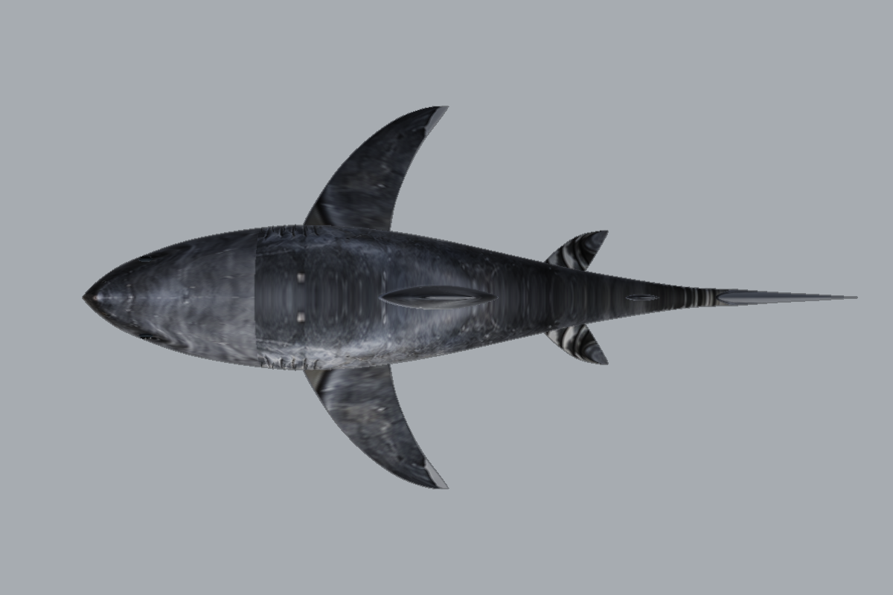
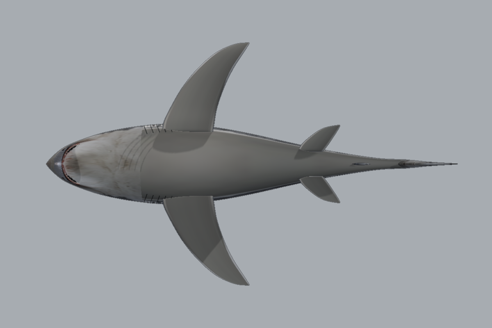

S95 / NATIVE MOTIONLOOM大白鯊 · 原生分件重建
MeshAsset + PrimitiveAsset · 全部預覽由 MotionLoom GPU renderer 輸出。
主場景 · 建模與驗證說明

新版 · 三分之四角度
原版 S95
新版 · 側面
正面
無貼圖 · 幾何檢查
頂視
腹面此版本為可編輯的分件模型；仍有貼圖接縫，未通過完整四視圖擬合門檻，也不是全焊接網格。原版已備份。